📑 Dans cette page (7 sections)
🧾 Formats acceptés
| Type | Formats | Taille max (réglable) |
|---|---|---|
| Image | PNG, JPG, GIF, WEBP | 12 Mo (MAX_IMAGE_MB) |
| Vidéo | MP4, WEBM | 80 Mo (MAX_VIDEO_MB) |
Le serveur lit la signature réelle du fichier : renommer un .exe en .png ne fonctionne pas. Le SVG est refusé volontairement (risque de script). Pour qu'une vidéo MP4 se lise dans tous les navigateurs, encode-la en H.264 + AAC.
📦 Où vont les fichiers ?
⚠️ Attention
Sur Render gratuit, le disque local est effacé à chaque redéploiement : les articles afficheraient des images cassées. Utilise R2/S3 (ou un disque Render payant).
%%{init: {"theme":"base","themeVariables":{"primaryColor":"#0f2130","primaryTextColor":"#e6eef5","primaryBorderColor":"#5fd0ff","lineColor":"#3d89ab","secondaryColor":"#1a0d14","tertiaryColor":"#0b1824","edgeLabelBackground":"#0f2130","fontFamily":"ui-monospace, Menlo, Consolas, monospace","noteBkgColor":"#1a0d14","noteTextColor":"#ffb4bb","actorBkg":"#0f2130","actorBorder":"#5fd0ff","actorTextColor":"#e6eef5","signalColor":"#3d89ab","signalTextColor":"#3d89ab","labelBoxBkgColor":"#0f2130","labelTextColor":"#e6eef5","loopTextColor":"#3d89ab"}}}%%
flowchart TD
A{"Où stocker les médias ?"}
A -->|"Render gratuit"| B["❌ Disque local effacé<br/>à chaque déploiement"]
A -->|"Render payant + disque"| C["💾 DATA_DIR=/var/data<br/>une seule instance"]
A -->|"Durable et évolutif"| D["☁️ Cloudflare R2 ou S3<br/>variables S3_*"]
B --> D
class D ok
class B bad
classDef cloud fill:#0f2130,stroke:#5fd0ff,color:#e6eef5
classDef ok fill:#0c241b,stroke:#5dffb0,color:#e6eef5
classDef bad fill:#241219,stroke:#ff4d5e,color:#ffb4bb
Chaque fichier reçoit un nom aléatoire (<28 caractères hexadécimaux>.png), sans rapport avec le nom d'origine. Son adresse est enregistrée dans la table media, puis réutilisée dans les articles.
| Mode | Activation | Adresse produite |
|---|---|---|
| Disque local | par défaut (DATA_DIR/uploads) |
/media/<nom> |
| S3 / Cloudflare R2 | variable S3_BUCKET définie |
<S3_PUBLIC_URL>/<nom> |
⚠️ Sur Render gratuit, le disque local est effacé à chaque redéploiement : les articles afficheraient des images cassées. Utilise R2/S3 (ou un disque Render payant).
💳 Option A — Disque persistant Render (payant)
- Service → Disks → ajoute un disque monté sur
/var/data. - Variable
DATA_DIR=/var/data. - Limite : une seule instance du service.
🅱️ Option B — Cloudflare R2 (recommandé pour durer)
%%{init: {"theme":"base","themeVariables":{"primaryColor":"#0f2130","primaryTextColor":"#e6eef5","primaryBorderColor":"#5fd0ff","lineColor":"#3d89ab","secondaryColor":"#1a0d14","tertiaryColor":"#0b1824","edgeLabelBackground":"#0f2130","fontFamily":"ui-monospace, Menlo, Consolas, monospace","noteBkgColor":"#1a0d14","noteTextColor":"#ffb4bb","actorBkg":"#0f2130","actorBorder":"#5fd0ff","actorTextColor":"#e6eef5","signalColor":"#3d89ab","signalTextColor":"#3d89ab","labelBoxBkgColor":"#0f2130","labelTextColor":"#e6eef5","loopTextColor":"#3d89ab"}}}%%
sequenceDiagram
actor E as ✍️ Éditeur
participant W as 🌐 Site
participant X as 🔎 Contrôles
participant S as 📦 Stockage
participant B as 🗄️ Base
E->>W: Dépose un fichier
W->>X: Vérifie signature, taille et type
X-->>W: Accepté ou refusé
W->>S: Enregistre sous un nom aléatoire
S-->>W: Adresse publique
W->>B: Ajoute une ligne dans media
W-->>E: Adresse prête à insérer
Offre gratuite avec quota, qui peut demander un moyen de paiement à l'inscription : vérifie les conditions actuelles.
- Cloudflare → R2 → Create bucket (ex.
scp-medias). - Accès public du bucket : active le domaine
r2.dev(pour tester) ou, mieux, connecte un domaine personnalisé. Note l'adresse publique obtenue. - Manage API tokens → crée un jeton avec droit Object Read & Write sur ce bucket. Note l'Access Key ID, le Secret et l'adresse S3 (
https://<ACCOUNT_ID>.r2.cloudflarestorage.com). - Dans le dépôt, décommente
boto3dansrequirements.txt, puisgit push. - Sur Render, ajoute :
| Variable | Valeur |
|---|---|
S3_BUCKET |
scp-medias |
S3_ENDPOINT_URL |
https://<ACCOUNT_ID>.r2.cloudflarestorage.com |
S3_PUBLIC_URL |
adresse publique du bucket, sans / final |
S3_ACCESS_KEY_ID |
clé d'accès |
S3_SECRET_ACCESS_KEY |
secret |
S3_REGION |
auto |
- Redéploie, envoie une image dans l'éditeur : l'adresse affichée doit commencer par
S3_PUBLIC_URL.
Autres services compatibles S3 (Backblaze B2, AWS S3, Supabase Storage via son endpoint S3) : mêmes variables.
🔁 Changer de stockage plus tard
Les articles contiennent l'adresse complète des médias au moment de l'envoi. Si tu changes de stockage ou de domaine, les anciennes adresses ne sont pas réécrites : copie les fichiers vers le nouveau stockage en gardant les mêmes noms et la même adresse publique, ou corrige les articles.
🎞️ Supprimer un média
Bouton Supprimer dans la bibliothèque : supprime le fichier et la ligne en base. Les articles qui l'utilisent afficheront un lien cassé.
✅ Bonnes pratiques
- Compresse les images (≈ 1600 px de large suffisent) et préfère WEBP/JPG aux gros PNG.
- Pour les animations, une courte vidéo MP4 avec l'option
loopest bien plus légère qu'un GIF. - Les vidéos lourdes coûtent de la bande passante : mets un CDN devant ou héberge-les sur YouTube (
[[youtube: …]]). - Les envois très lourds peuvent atteindre les limites de requête de l'hébergeur ou d'un proxy (certains plafonnent à ≈ 100 Mo).


◀ 🗄️ Base de données · ✍️ Rédiger un article ▶

⛨ SCP Foundation — projet de fan non officiel · contenus SCP sous licence CC BY-SA 3.0 lorsque applicable · ⬆ retour en haut